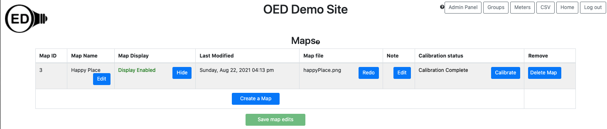

OED Documentation
Map Viewing
Version V0.7.0
The latest version of this page is V1.0.0.
Documentation overview
Admin documentation
Information
Site Management
Data Acquisition
Site Installation
User documentation
Documentation versions for this page
These features are only available to select people who oversee the OED site (called admins) so this information is not usually of interest to a general user.
Overview
If you are logged in as an admin you can visit the "Maps" page by clicking on the "Maps" button in the top, right corner of any OED page. You can see and edit information on maps on this page. You can also create a new map as described on the admin map page. Each column is described below and the next image shows a sample page. It is important that you click the "Save map edits" button at the bottom of the page to save your changes to the database. If you do not do this, other users will not see the change and it will be gone the next time you visit your site or refresh your web browser page with OED. Note that the first column with the map ID will show "(edited)" if a map has been modified but the changes are not yet saved. 
Usage
Each column has the following meaning/usage:
- Map ID: This is the internal id used for this map in the database and cannot be changed. It is not usually of interest but given in case there is an issue and we need the information to help track it down.
- Map Name: The name displayed and used for selecting this map.
- Map Display: This controls whether regular users can see a map and graph it. If the string is "Display Enabled" in green with the button "Hide" then users can see this map. If you want to reverse this, click the "Hide" button so the string becomes "Display Disabled" in red and the button becomes "Show". Clicking the "Show" button reverses this again so it is visible to the user. A logged in admin can always see all maps. New maps are not displayed by default so the admin needs to do this once the map and associated meters are set up.
- Last Modified: This gives the date and time of the last time the map was added or calibrated.
- Map file: This is the name of the image file that was used to create this map.
- Note: You can add any information you want about this map for your records. It is not shown to users.
- Calibration status. Displays "Calibration Complete" if the map has been calibrated and "Calibration Needed" if the map is not calibrated. Clicking the "Calibrate" button allows you to do/redo the calibration. See the admin map page for information on map calibration. Maps must be calibrated before they can be used.
- Remove: Clicking the "Delete Map" button will remove this map from OED. A popup will appear to confirm you want to remove the map where clicking "OK" removes the map and "Cancel" quits the removal.
Details
None at this time.